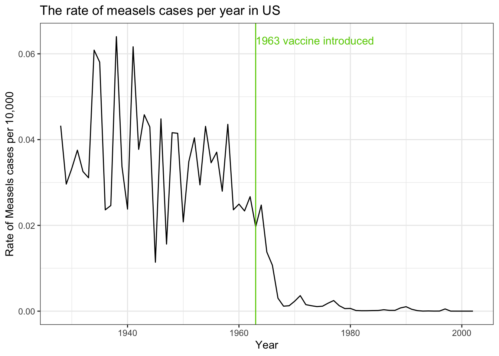
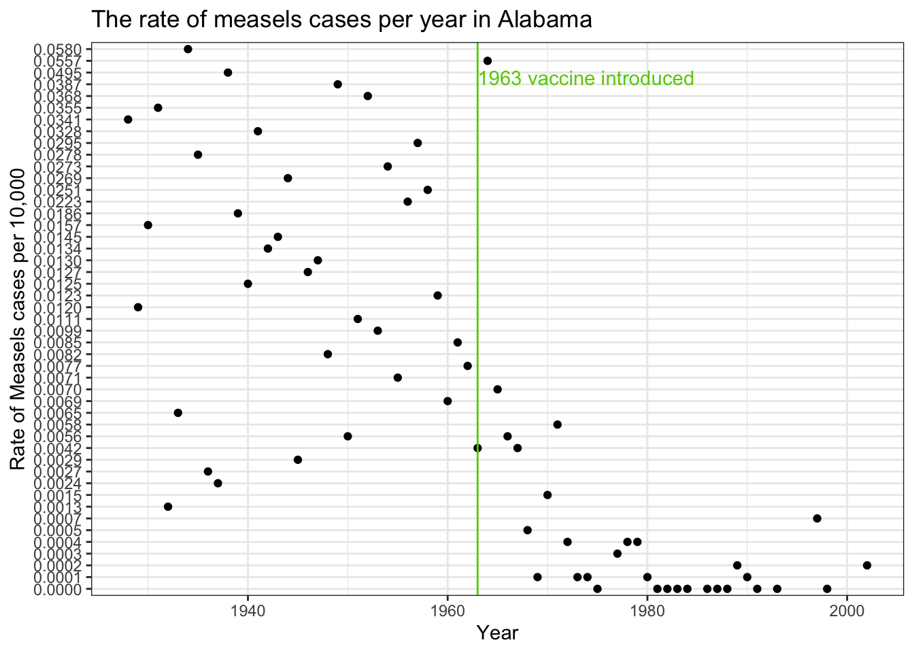

Quarto enables you to weave together content and executable code into a finished document. To learn more about Quarto see https://quarto.org.
Measles
Load the dslabs package and figure out what is in the us_contagious_diseases dataset. Create a data frame, call it avg, that has a column for year, and a rate column containing the cases of Measles per 10,000 people per year in the US. Because we start in 1928, exclude Alaska and Hawaii. Make sure to take into account the number of weeks reporting each year. If a week was not report, it should not be included in the calculation of the rate.
# install librarieslibrary(tidyverse)
── Attaching core tidyverse packages ──────────────────────── tidyverse 2.0.0 ──
✔ dplyr 1.1.4 ✔ readr 2.1.5
✔ forcats 1.0.0 ✔ stringr 1.5.1
✔ ggplot2 3.4.4 ✔ tibble 3.2.1
✔ lubridate 1.9.3 ✔ tidyr 1.3.1
✔ purrr 1.0.2
── Conflicts ────────────────────────────────────────── tidyverse_conflicts() ──
✖ dplyr::filter() masks stats::filter()
✖ dplyr::lag() masks stats::lag()
ℹ Use the conflicted package (<http://conflicted.r-lib.org/>) to force all conflicts to become errors
library(dslabs)
Let’s inspect the us_contagious_diseases dataset:
head(us_contagious_diseases)
disease state year weeks_reporting count population
1 Hepatitis A Alabama 1966 50 321 3345787
2 Hepatitis A Alabama 1967 49 291 3364130
3 Hepatitis A Alabama 1968 52 314 3386068
4 Hepatitis A Alabama 1969 49 380 3412450
5 Hepatitis A Alabama 1970 51 413 3444165
6 Hepatitis A Alabama 1971 51 378 3481798
The us_contagious_diseases dataset has 16,065 rows of data - each is a count of reported cases of a disease in a specific year in a specific state.
Using the command ?us_contagious_diseases in R console in R Studio we can get some info on that dataset. The provided data description states: “Yearly counts for Hepatitis A, Measles, Mumps, Pertussis, Polio, Rubella, and Smallpox for US states. Original data courtesy of Tycho Project (http://www.tycho.pitt.edu/).”
The variable dictionary is:
disease. A factor containing disease names.
state. A factor containing state names.
year.
weeks_reporting. Number of weeks counts were reported that year.
count. Total number of reported cases.
population. State population, interpolated for non-census years.
We can see that some years there was weeks when the data was reported, the weeks_reporting column will have a zero in this case.
# Find all the records with 0 week reported that yearweeks_0 <- us_contagious_diseases %>%filter(weeks_reporting ==0)head(weeks_0)
disease state year weeks_reporting count population
1 Hepatitis A Alaska 2006 0 0 672961
2 Hepatitis A Delaware 2000 0 0 783600
3 Hepatitis A District Of Columbia 2008 0 0 591879
4 Hepatitis A District Of Columbia 2009 0 0 596721
5 Hepatitis A District Of Columbia 2011 0 0 606787
6 Hepatitis A New Hampshire 2011 0 0 1323882
There are 1,800 records like that!
To accomplish what is asked in question 1:
# Filter the rows by measles disease only# Exclude states Hawaii and Alaska# Remove the records where there were no weeks when data was reported# Taking an average of counts of measles in all the states each yearavg <- us_contagious_diseases |>filter(disease =="Measles"&!state %in%c("Hawaii", "Alaska") & weeks_reporting >0) |>group_by(year) |>summarize(rate =sum(count/weeks_reporting *52, na.rm=TRUE)/sum(population) *10,000)avg
Use the data frame avg to make a trend plot showing the cases rate for Measles per year. Add a vertical line showing the year the Measles vaccines was introduced.
# Measels vaccine was introduced in 1963meas_cases <- avg |>ggplot(aes(year, rate)) +geom_line() +geom_vline(xintercept =1963, show.legend =TRUE, color ="chartreuse3") +annotate("text", x =1963, y =max(avg$rate), label ="1963 vaccine introduced", vjust =1, hjust =0, color ="chartreuse3") +labs(title ="The rate of measels cases per year in US", x ="Year", y ="Rate of Measels cases per 10,000") +theme_bw()meas_cases

Add a grey trend line for each state to the plot above. Use a transformation that keeps the high rates from dominating the figure.
In the plot above we can’t tell which state is which curve. Using color would be challenging as it is hard if not impossible to find 48 colors humans can distinguish. To make a plot where you can compare states knowing which is which, use one of the axis for state and the other for year, and then use hue or intensity as a visual cue for rates. Use a sqrt transformation to avoid the higher rates taking up all the color scale. Use grey to denote missing data. Order the states based on their highest peak. You can include Hawaii and Alaska.
## use this color palletereds <- RColorBrewer::brewer.pal(9, "Reds")#us_contagious_diseases |>
Incorporate one or more of the figures you just created to write a 2-3 page report, using quarto, describing the evidence these data show about vaccines in controlling disease. Upload your report and code to a GitHub repository.
Hera are some other plots that could serve as good visuals to show the effect of vaccines on disease cases.
We can look at the data state by state. The examples of a couple of states are below.
# Add column of measels cases per 10,000 people state_trends <- us_contagious_diseases |>filter(disease =="Measles"&!state %in%c("Hawaii", "Alaska") & weeks_reporting >0) |>mutate (cases_per_10000r = count/weeks_reporting *52/population *10,000) |>mutate(cases_per_10000 =sprintf("%.4f", cases_per_10000r))head(state_trends)
Alabama_df <- state_trends |>filter(state =="Alabama")#Plot Alabama data onlyAlabama_df |>ggplot(aes(year, cases_per_10000)) +geom_point() +geom_vline(xintercept =1963, show.legend =TRUE, color ="chartreuse3") +annotate("text", x =1963, y =max(Alabama_df$cases_per_10000), label ="1963 vaccine introduced", vjust =2.5, hjust =0, color ="chartreuse3") +labs(title ="The rate of measels cases per year in Alabama", x ="Year", y ="Rate of Measels cases per 10,000") +theme_bw()

California
California_df <- state_trends |>filter(state =="California")#Plot California data onlyCalifornia_df |>ggplot(aes(year, cases_per_10000)) +geom_point() +geom_vline(xintercept =1963, show.legend =TRUE, color ="chartreuse3") +annotate("text", x =1963, y =max(California_df$cases_per_10000), label ="1963 vaccine introduced", vjust =2.5, hjust =0, color ="chartreuse3") +labs(title ="The rate of measels cases per year in California", x ="Year", y ="Rate of Measels cases per 10,000") +theme_bw()
New York state
NY_df <- state_trends |>filter(state =="New York")#Plot NY state data onlyNY_df |>ggplot(aes(year, cases_per_10000)) +geom_point() +geom_vline(xintercept =1963, show.legend =TRUE, color ="chartreuse3") +annotate("text", x =1963, y =max(NY_df$cases_per_10000), label ="1963 vaccine introduced", vjust =2.5, hjust =0, color ="chartreuse3") +labs(title ="The rate of measels cases per year in NY", x ="Year", y ="Rate of Measels cases per 10,000") +theme_bw()
Massachusetts
Mass_df <- state_trends |>filter(state =="Massachusetts")#Plot Massachusetts state data onlyMass_df |>ggplot(aes(year, cases_per_10000)) +geom_point() +geom_vline(xintercept =1963, show.legend =TRUE, color ="chartreuse3") +annotate("text", x =1963, y =max(Mass_df$cases_per_10000), label ="1963 vaccine introduced", vjust =2.5, hjust =0, color ="chartreuse3") +labs(title ="The rate of measels cases per year in Massachusetts", x ="Year", y ="Rate of Measels cases per 10,000") +theme_bw()
As we can see on all the plots the rate of cases of measles drastically decreases after the vaccine is introduced in the US population.